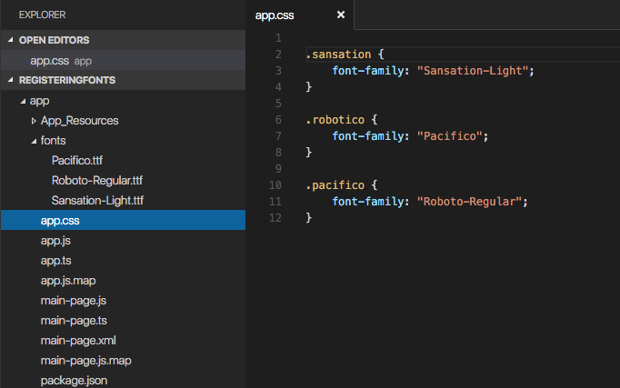

Styling
Styling
This article includes the following topics:
- Introduction
- Applying CSS Styles
- Supported Selectors
- Supported CSS Properties
- Accessing NativeScript component properties with CSS
- Using Fonts
- Import External CSS
- CSS parser playground
Introduction
You change the looks and appearance of views (elements) in a NativeScript application similarly to how you do it in a web application—using Cascading Style Sheets (CSS) or changing the style object of the elements in JavaScript. Only a subset of the CSS language is supported.
Similarly to the DOM Style Object, each View instance exposes a style property, which holds all the style properties for the view. When the view is displayed, all its style properties are applied to the underlying native widget.
Applying CSS styles
The CSS styles can be set on 3 different levels:
- Application-wide CSS: Applies to every application page* [Page-specific CSS](#page-specific-css): Applies to the page's UI views* [Component-specific CSS](#component-specific-css): Applies for component only
- Inline CSS: Applies directly to a UI view
If there is CSS declared on different levels—all will be applied. The inline CSS will have the highest priority and the application CSS will have the lowest priority.
Application-wide CSS
When the application starts, NativeScript checks if the file app.css exists. If it does, any CSS styles that it contains are loaded and used across all application pages. This file is a convenient place to store styles that will be used on multiple pages.
You can change the name of the file from which the application-wide CSS is loaded. You need to do the change before the application is started, usually in the app.js or app.ts file as shown below:
The path to the CSS file is relative to the application root folder.
Adding CSS from a string
This snippet adds a new style to the current set of styles. This is quite useful when you need to add a small CSS chunk to an element (for example, for testing purposes):
``` JavaScript page.addCss("button {background-color: blue}"); ``` ``` TypeScript page.addCss("button {background-color: blue}"); ```Adding CSS from a file
This snippet adds new CSS styles to the current set. However, this method reads them from a file. It is useful for organizing styles in files and reusing them across multiple pages.
``` JavaScript page.addCssFile(cssFileName); ``` ``` TypeScript page.addCssFile(cssFileName); ```The path to the CSS file is relative to the application root folder.
Inline CSS
Similarly to HTML, CSS can be defined inline for a UI view in the XML markup:
Supported selectors
Currently the CSS support is limited only to the selectors and properties listed in the current article.
NativeScript supports a subset of the CSS selector syntax. Here is how to use the supported selectors:
Type selector
Like CSS element selectors, type selectors in NativeScript select all views of a given type. Type selectors are case insensitive, so you can use both button and Button.
Class selector
Class selectors select all views with a given class.
The class is set using the cssClass property of the view.
ID selector
Id selectors select all views with a given id.
The id is set using the id property of the view.
Hierachical selector (CSS combinators)
A CSS selector could contain more than one simple selector, and between selectors a combinator symbol could be included.
- (space) - Descendant selector. For example, the following code will select all buttons inside StackLayouts (no matter) at which level.
- (>) - A direct child selector. Using the previous example, if the CSS is changed to:
The background-color rule will not be applied. In order to apply the selector, the WrapLayout element would need to be removed so that the Button is a direct child of the StackLayout.
Attribute selector
This selector will select all buttons that have the attribute testAttr with some value.
Also, some more advanced scenarios are supported:
- button[testAttr=’flower’] {…} - Will apply CAA on every button that has the
testAttrproperty set exactly to the valueflower. - button[testAttr~=’flower’] {…} - Selects all buttons with a
testAttrproperty that contains a space-separated list of words, one of which is “flower”. - button[testAttr|=’flower’] {…} - Selects all buttons with a
testAttrproperty value that begins with “flower”. The value has to be a whole word, either alone likebtn['testAttr'] = 'flower', or followed by hyphen (-), likebtn['testAttr'] = 'flower-house'. - button[testAttr^=’flower’] {…} - Selects all buttons with a
testAttrproperty value that begins with “flower”. The value does not have to be a whole word. - button[testAttr$=’flower’] {…} - Selects all buttons with a
testAttrproperty value that ends with “flower”. The value does not have to be a whole word. - button[testAttr*=’flo’] {…} - Selects all buttons with a
testAttrproperty value that contains “flo”. The value does not have to be a whole word.
Attribute selectors could be used alone or could be combined with all type of CSS selectors.
Supported CSS properties
This list of properties can be set in CSS or through the style property of each view:
| CSS Property | JavaScript Property | Description |
|---|---|---|
| color | color | Sets a solid-color value to the matched view’s foreground. |
| background-color | backgroundColor | Sets a solid-color value to the matched view’s background. |
| background-image | backgroundImage | Sets a image url to the matched view’s background image. |
| background-repeat | backgroundRepeat | Sets if/how the background image should be repeated. Possible values: “repeat”, “repeat-x”, “repeat-y”, “no-repeat” |
| background-position | backgroundPosition | Sets the starting position of the background image. You can set the position with absolute, percent or alignment values. More info here. |
| background-size | backgroundSize | Sets the size of the background image. Possible values: “length length“, “percent% percent%“, “cover” or “contain”. |
| border-color | borderColor | Sets a border color to the matched view’s. |
| border-width | borderWidth | Sets a border width to the matched view’s. |
| border-radius | borderRadius | Sets a border radius to the matched view’s. |
| font | font | Sets the font properties (this includes font-family, font-size, font-style and font-weight) of the matched view. |
| font-family | fontFamily | Sets the font family of the matched view. |
| font-size | fontSize | Sets the font size of the matched view (only supports device-independent units). |
| font-style | fontStyle | Sets the font style of the matched view. Possible values: “italic”, “normal”. |
| font-weight | fontWeight | Sets the font weight of the matched view Possible values: “bold”, “normal”. |
| text-align | textAlignment | Sets text alignment in the matched view. Possible values: “left” , “center”, “right”. |
| text-decoration | textDecoration | Sets the text formatting. Possible values: “none”, “line-through”, “underline”. |
| text-transform | textTransform | Sets the text transform. Possible values: “none”, “capitalize”, “uppercase”, “lowercase”. |
| letter-spacing | letterSpacing | Sets the text letter spacing. (On Android API Level 21 and above.) |
| z-index | zIndex | Sets the z-index. (On Android API Level 21 and above.) |
| clip-path | clip-path | Sets the clip-path. Supported shapes are circle, ellipse, rect and polygon. You can define your own shape using clippy |
| vertical-align | verticalAlignment | Sets the vertical alignment of the current view within its parent. Possible values: “top”, “center”, “bottom”, “stretch”. |
| horizontal-align | horizontalAlignment | Sets the horizontal alignment of the current view within its parent. Possible values: “left”, “center”, “right”, “stretch”. |
| margin | margin | Sets the margin of the view within its parent. |
| margin-top | marginTop | Sets the top margin of the view within its parent. |
| margin-right | marginRight | Sets the right margin of the view within its parent. |
| margin-bottom | marginBottom | Sets the bottom margin of the view within its parent. |
| margin-left | marginLeft | Sets the left margin of the view within its parent. |
| width | width | Sets the view width. |
| height | height | Sets the view height. |
| min-width | minWidth | Sets the minimal view width. |
| min-height | minHeight | Sets the minimal view height. |
| padding | padding | Sets the distance between the boundaries of the layout container and its children. |
| padding-top | paddingTop | Sets the top padding of a layout container. |
| padding-right | paddingRight | Sets the right padding of a layout container. |
| padding-bottom | paddingBottom | Sets the bottom padding of a layout container. |
| padding-left | paddingLeft | Sets the left padding of a layout container. |
| visibility | visibility | Sets the view visibility. Possible values: “visible”, “collapse” (or “collapsed”). |
| opacity | opacity | Sets the view opacity. The value is in the [0, 1] range. |
Accessing NativeScript component properties with CSS
You can set NativeScript component properties value that are not part of the CSS specification. For example: ```CSS StackLayout { orientation: horizontal; } ```
This feature is limited to properties with simple types like string, number and boolean, and will set a local property value similar to component markup declaration in XML. CSS cascading and inheritance are not supported.
Using fonts
The font-family property can hold several values. The first supported font in the list will be used. There is also support for the following generic font-families:
- serif (ex. Times New Roman)
- sans-serif (ex. Helvetica)
- monospace (ex. Courier New)
Platform specifics:
- Android: The supported fonts depend very much on the system, thus using the generic font-families or custom-fonts is recommended.
- iOS: You can check the supported fonts in iOS 7.
Custom fonts
You can use custom fonts in your app (in .TTF or .OTF format).
The NativeScript runtime will look for the font files under the app/fonts/ directory and load them automatically.

Note: In iOS your font file should be named exactly as the font name. If you have doubt about the original font name use Font Book app to get the original font name.
Import external CSS
The @import CSS rule allows you to import external CSS from local file, resource or url. These rules must precede all other types of rules.
```CSS @import { url('http://some-domain.com/your-style.css') } @import { url('res://your-style.css') } @import { url('~/your-style.css') } ```